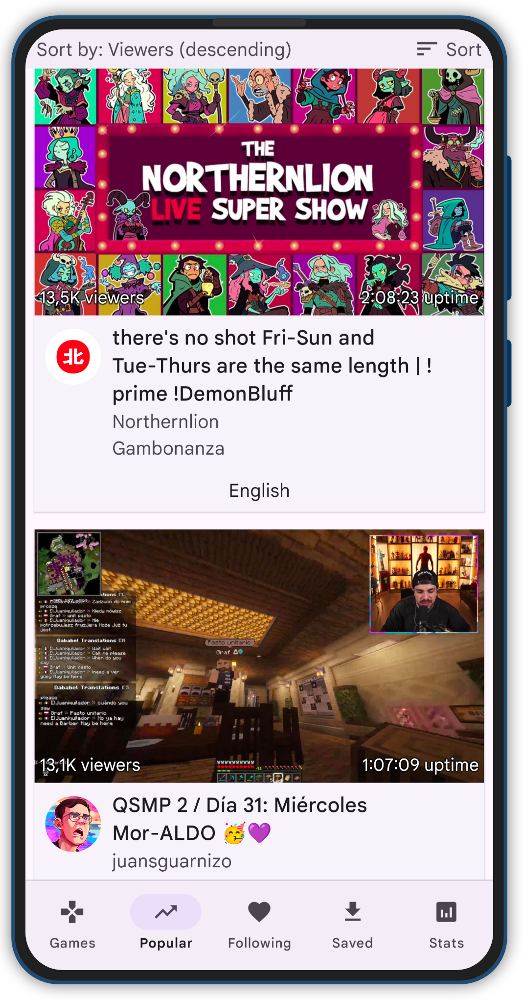
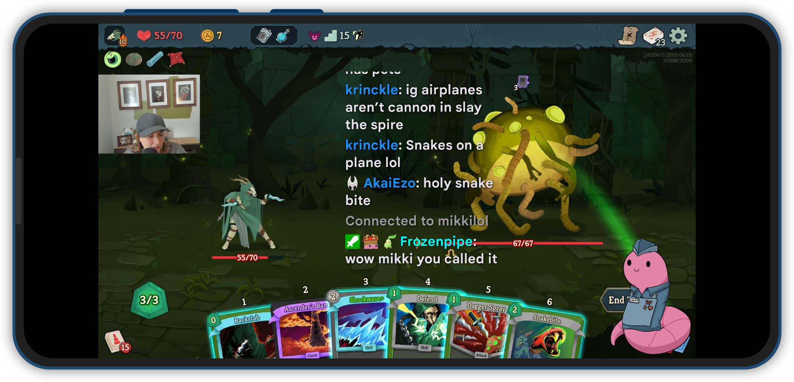
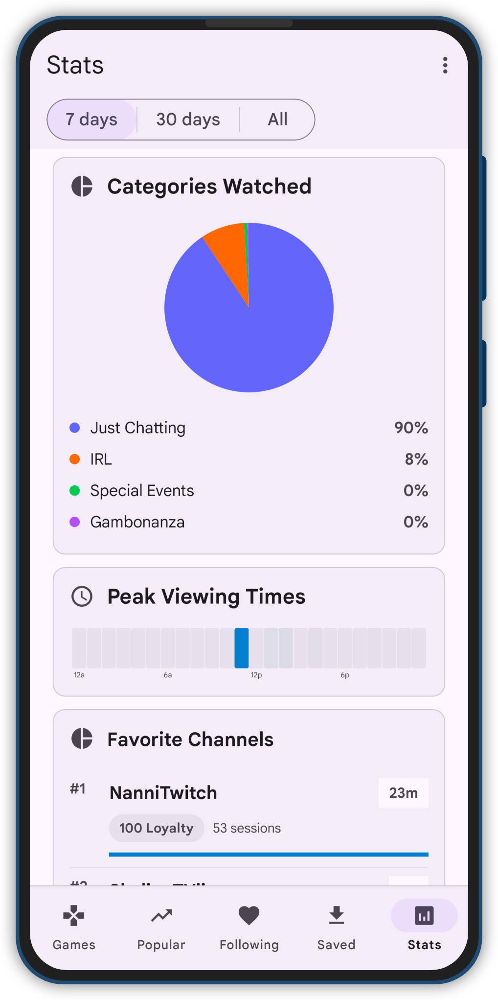
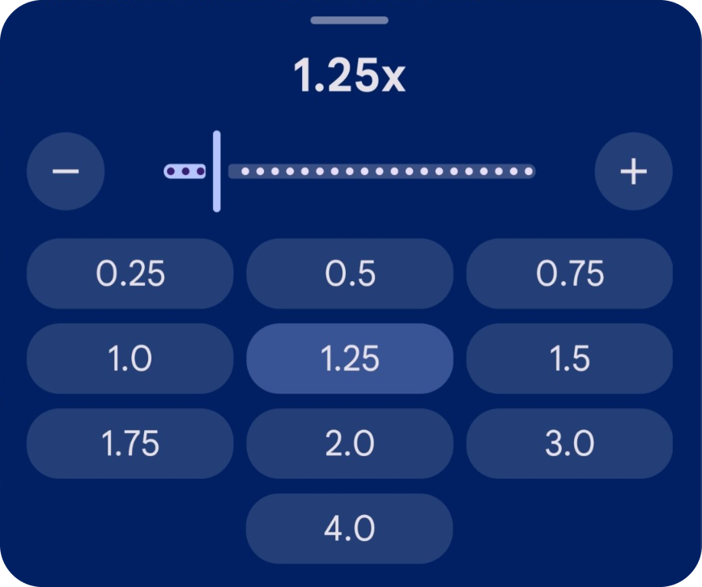
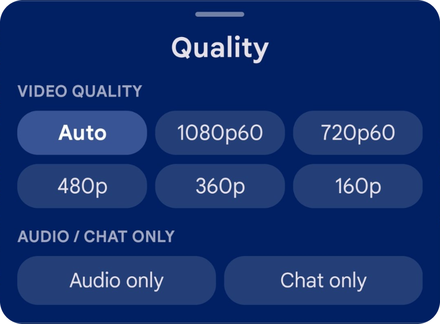

DISCOVER

 THYSTTV
THYSTTV
NEW RELEASE PREP
ThystTV is a polished fork of Xtra focused on better playback UX, floating chat, local stats and watch-history insights, and improved large-screen behavior. A lot of credit goes to the Xtra project for the foundation.
DOWNLOAD ON GITHUB ->


PLAYER REFINEMENT
Gesture-based playback controls cover horizontal seek, playback speed, brightness, volume, and clearer player feedback without pulling you out of the stream.


ThystTV is free and open source. It is based on Xtra, and a lot of credit goes to the Xtra project. The 1.2 release focuses on player polish, a visual refresh, repo maturity, and better project presentation.
VIEW ON GITHUB ->